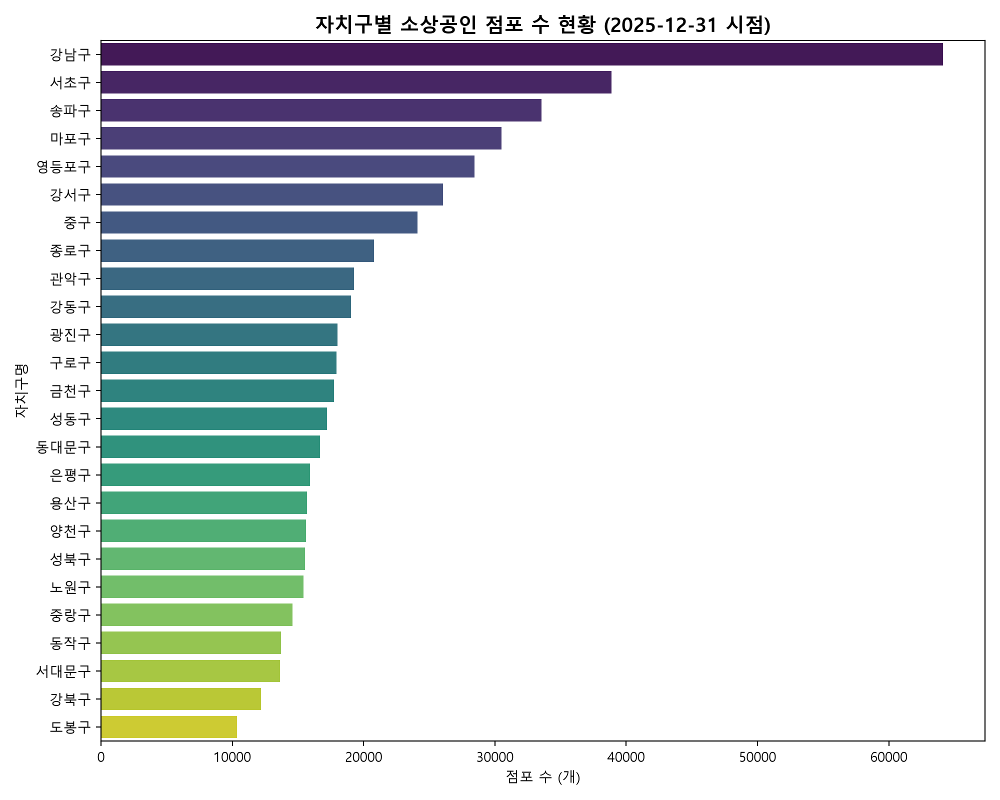
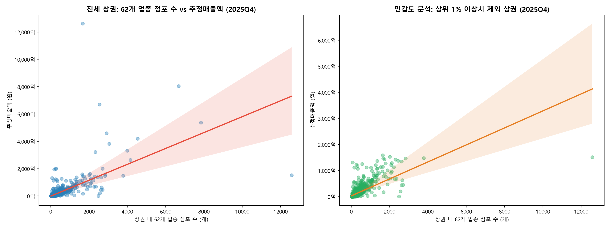
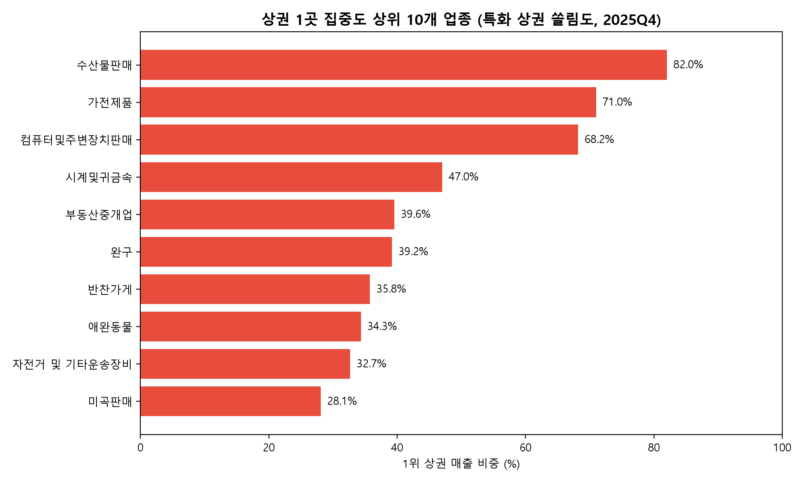

서울시 전체 1,650개 상권 및 소상공인 점포 원천 데이터 품질·특성 분석 대시보드
| 파일명 | 실제 행수 | 일치여부 | 기준 키 | 단위 | 결측치 수 |
|---|---|---|---|---|---|
| 소상공인_상가정보_서울.csv | 534,978 | 일치 | 상가업소번호 | 점포 (건) | 2,586,358 |
| OA-15560_영역_상권.csv | 1,650 | 일치 | 상권_코드 | 상권 영역 | 0 |
| OA-15568_길단위인구_상권.csv | 6,595 | 일치 | 기준_년분기_코드+상권_코드 | 인구수 (명) | 0 |
| OA-15569_직장인구_상권.csv | 6,564 | 일치 | 기준_년분기_코드+상권_코드 | 인구수 (명) | 0 |
| OA-15572_추정매출_상권.csv | 85,732 | 일치 | 기준_년분기_코드+상권_코드+서비스_업종_코드 | 금액 (원) / 건수 | 0 |
| OA-15576_상권변화지표_상권.csv | 6,600 | 일치 | 기준_년분기_코드+상권_코드 | 지표값 / 구분 | 0 |
| OA-15577_점포_상권.csv | 304,775 | 일치 | 기준_년분기_코드+상권_코드+서비스_업종_코드 | 개수 | 0 |
| OA-15580_집객시설_상권.csv | 6,312 | 일치 | 기준_년분기_코드+상권_코드 | 개수 | 102,500 |
| OA-15584_상주인구_상권.csv | 6,532 | 일치 | 기준_년분기_코드+상권_코드 | 인구수 (명) | 0 |
| OA-22166_소비_행정동.csv | 1,700 | 일치 | 기준_년분기_코드+행정동_코드 | 지출금액 (원) | 0 |

| 자치구명 | 최고 특화 업종 | 해당구 점포수 | 구 내 비중 | 입지계수 (LQ) | 해석 |
|---|---|---|---|---|---|
| 강남구 | 과학·기술 | 18,854개 | 29.40% | 1.687 | 서울 대비 고특화 |
| 강동구 | 보건의료 | 882개 | 4.63% | 1.315 | 서울 대비 특화 |
| 강북구 | 수리·개인 | 1,683개 | 13.82% | 1.433 | 서울 대비 특화 |
| 강서구 | 수리·개인 | 3,203개 | 12.31% | 1.275 | 서울 대비 특화 |
| 관악구 | 숙박 | 630개 | 3.27% | 1.977 | 서울 대비 고특화 |
| 광진구 | 예술·스포츠 | 918개 | 5.10% | 1.333 | 서울 대비 특화 |
| 구로구 | 예술·스포츠 | 822개 | 4.59% | 1.200 | 서울 대비 특화 |
| 금천구 | 과학·기술 | 5,814개 | 32.78% | 1.881 | 서울 대비 고특화 |
| 노원구 | 교육 | 2,022개 | 13.12% | 1.554 | 서울 대비 고특화 |
| 도봉구 | 수리·개인 | 1,404개 | 13.58% | 1.407 | 서울 대비 특화 |
| 동대문구 | 소매 | 4,585개 | 27.50% | 1.318 | 서울 대비 특화 |
| 동작구 | 숙박 | 383개 | 2.79% | 1.689 | 서울 대비 고특화 |
| 마포구 | 숙박 | 1,192개 | 3.91% | 2.366 | 서울 대비 고특화 |
| 서대문구 | 숙박 | 363개 | 2.66% | 1.611 | 서울 대비 고특화 |
| 서초구 | 과학·기술 | 12,633개 | 32.48% | 1.863 | 서울 대비 고특화 |
| 성동구 | 과학·기술 | 3,829개 | 22.23% | 1.275 | 서울 대비 특화 |
| 성북구 | 수리·개인 | 1,915개 | 12.33% | 1.277 | 서울 대비 특화 |
| 송파구 | 예술·스포츠 | 1,561개 | 4.65% | 1.217 | 서울 대비 특화 |
| 양천구 | 교육 | 2,535개 | 16.22% | 1.922 | 서울 대비 고특화 |
| 영등포구 | 시설관리·임대 | 1,614개 | 5.68% | 1.253 | 서울 대비 특화 |
| 용산구 | 숙박 | 449개 | 2.86% | 1.730 | 서울 대비 고특화 |
| 은평구 | 수리·개인 | 2,052개 | 12.89% | 1.336 | 서울 대비 특화 |
| 종로구 | 숙박 | 715개 | 3.44% | 2.080 | 서울 대비 고특화 |
| 중구 | 숙박 | 713개 | 2.96% | 1.789 | 서울 대비 고특화 |
| 중랑구 | 수리·개인 | 2,091개 | 14.35% | 1.487 | 서울 대비 특화 |
| 권역 | 과학·기술 | 교육 | 보건의료 | 부동산 | 소매 | 수리·개인 | 숙박 | 시설관리·임대 | 예술·스포츠 | 음식 | 총계 |
|---|---|---|---|---|---|---|---|---|---|---|---|
| 도심권 | 9,877 | 2,534 | 1,344 | 1,998 | 17,096 | 3,371 | 1,877 | 3,633 | 1,279 | 17,613 | 60,622 |
| 동남권 | 39,204 | 15,163 | 6,687 | 8,575 | 27,326 | 12,891 | 1,464 | 7,061 | 5,297 | 31,952 | 155,620 |
| 동북권 | 12,605 | 10,161 | 4,295 | 5,462 | 27,923 | 14,548 | 1,656 | 4,407 | 5,568 | 33,320 | 119,945 |
| 서남권 | 23,053 | 11,737 | 4,648 | 6,285 | 28,117 | 14,743 | 2,122 | 6,375 | 6,189 | 35,486 | 138,755 |
| 서북권 | 8,522 | 5,563 | 1,866 | 2,739 | 11,170 | 6,073 | 1,722 | 2,755 | 2,113 | 17,513 | 60,036 |
| 총계 | 93,261 | 45,158 | 18,840 | 25,059 | 111,632 | 51,626 | 8,841 | 24,231 | 20,446 | 135,884 | 534,978 |
| 층 분류 | 과학·기술 | 교육 | 보건의료 | 부동산 | 소매 | 수리·개인 | 숙박 | 시설관리·임대 | 예술·스포츠 | 음식 | 총계 |
|---|---|---|---|---|---|---|---|---|---|---|---|
| 미입력(결측) | 35,492 | 14,522 | 5,882 | 8,706 | 45,226 | 17,705 | 5,427 | 9,907 | 5,795 | 39,328 | 187,990 |
| 지상 1층 | 8,894 | 4,806 | 1,003 | 11,920 | 41,502 | 20,410 | 597 | 3,029 | 5,175 | 78,021 | 175,357 |
| 지상 2층 | 10,860 | 9,331 | 4,439 | 1,314 | 8,322 | 6,849 | 784 | 3,075 | 3,063 | 11,811 | 59,848 |
| 지상 3층 이상 | 36,604 | 15,625 | 7,472 | 2,889 | 14,645 | 5,849 | 1,894 | 7,596 | 4,206 | 4,300 | 101,080 |
| 지하층 | 1,323 | 842 | 37 | 225 | 1,902 | 803 | 136 | 612 | 2,203 | 2,397 | 10,480 |
| 호수오기/미분류 | 86 | 31 | 7 | 5 | 34 | 10 | 3 | 12 | 4 | 26 | 218 |
| 기타/미분류 | 2 | 1 | 0 | 0 | 1 | 0 | 0 | 0 | 0 | 1 | 5 |
| 총계 | 93,261 | 45,158 | 18,840 | 25,059 | 111,632 | 51,626 | 8,841 | 24,231 | 20,446 | 135,884 | 534,978 |
| 자치구 | 과학·기술 | 교육 | 보건의료 | 부동산 | 소매 | 수리·개인 | 숙박 | 시설관리·임대 | 예술·스포츠 | 음식 | 총계 |
|---|---|---|---|---|---|---|---|---|---|---|---|
| 강남구 | 18,854 | 6,219 | 3,067 | 3,665 | 9,869 | 4,681 | 511 | 3,132 | 1,779 | 12,346 | 64,123 |
| 강동구 | 1,681 | 2,008 | 882 | 1,121 | 4,232 | 2,310 | 276 | 724 | 875 | 4,937 | 19,046 |
| 강북구 | 980 | 764 | 477 | 532 | 2,860 | 1,683 | 183 | 434 | 649 | 3,612 | 12,174 |
| 강서구 | 3,683 | 2,273 | 958 | 1,280 | 5,117 | 3,203 | 261 | 1,283 | 1,145 | 6,825 | 26,028 |
| 관악구 | 1,878 | 1,567 | 687 | 908 | 3,845 | 2,491 | 630 | 713 | 1,091 | 5,473 | 19,283 |
| 광진구 | 2,088 | 1,389 | 592 | 868 | 4,073 | 2,077 | 302 | 784 | 918 | 4,925 | 18,016 |
| 구로구 | 2,926 | 1,319 | 563 | 704 | 4,104 | 1,849 | 228 | 835 | 822 | 4,571 | 17,921 |
| 금천구 | 5,814 | 835 | 361 | 737 | 3,312 | 1,432 | 122 | 984 | 545 | 3,592 | 17,734 |
| 노원구 | 1,022 | 2,022 | 724 | 581 | 3,529 | 1,804 | 103 | 444 | 860 | 4,327 | 15,416 |
| 도봉구 | 856 | 904 | 369 | 450 | 2,648 | 1,404 | 59 | 337 | 539 | 2,773 | 10,339 |
| 동대문구 | 1,330 | 1,239 | 592 | 820 | 4,585 | 1,860 | 355 | 592 | 694 | 4,606 | 16,673 |
| 동작구 | 1,198 | 1,395 | 579 | 758 | 3,027 | 1,519 | 383 | 465 | 649 | 3,751 | 13,724 |
| 마포구 | 5,704 | 2,634 | 752 | 1,161 | 4,837 | 2,690 | 1,192 | 1,616 | 900 | 9,002 | 30,488 |
| 서대문구 | 1,515 | 1,341 | 435 | 624 | 2,812 | 1,331 | 363 | 592 | 525 | 4,096 | 13,634 |
| 서초구 | 12,633 | 3,820 | 1,527 | 2,094 | 6,491 | 2,472 | 308 | 1,819 | 1,082 | 6,646 | 38,892 |
| 성동구 | 3,829 | 1,193 | 446 | 782 | 3,312 | 1,714 | 224 | 741 | 521 | 4,459 | 17,221 |
| 성북구 | 1,280 | 1,670 | 546 | 754 | 3,471 | 1,915 | 260 | 485 | 646 | 4,508 | 15,535 |
| 송파구 | 6,036 | 3,116 | 1,211 | 1,695 | 6,734 | 3,428 | 369 | 1,386 | 1,561 | 8,023 | 33,559 |
| 양천구 | 1,358 | 2,535 | 685 | 747 | 3,321 | 1,899 | 95 | 481 | 815 | 3,690 | 15,626 |
| 영등포구 | 6,196 | 1,813 | 815 | 1,151 | 5,391 | 2,350 | 403 | 1,614 | 1,122 | 7,584 | 28,439 |
| 용산구 | 2,231 | 880 | 294 | 804 | 3,945 | 1,140 | 449 | 561 | 334 | 5,063 | 15,701 |
| 은평구 | 1,303 | 1,588 | 679 | 954 | 3,521 | 2,052 | 167 | 547 | 688 | 4,415 | 15,914 |
| 종로구 | 2,948 | 1,074 | 481 | 558 | 5,547 | 1,102 | 715 | 1,377 | 502 | 6,500 | 20,804 |
| 중구 | 4,698 | 580 | 569 | 636 | 7,604 | 1,129 | 713 | 1,695 | 443 | 6,050 | 24,117 |
| 중랑구 | 1,220 | 980 | 549 | 675 | 3,445 | 2,091 | 170 | 590 | 741 | 4,110 | 14,571 |
| 총계 | 93,261 | 45,158 | 18,840 | 25,059 | 111,632 | 51,626 | 8,841 | 24,231 | 20,446 | 135,884 | 534,978 |
| 자치구 | 과학·기술 | 교육 | 보건의료 | 부동산 | 소매 | 수리·개인 | 숙박 | 시설관리·임대 | 예술·스포츠 | 음식 |
|---|---|---|---|---|---|---|---|---|---|---|
| 강남구 | 1.687 | 1.149 | 1.358 | 1.220 | 0.738 | 0.756 | 0.482 | 1.078 | 0.726 | 0.758 |
| 강동구 | 0.506 | 1.249 | 1.315 | 1.257 | 1.065 | 1.257 | 0.877 | 0.839 | 1.202 | 1.021 |
| 강북구 | 0.462 | 0.743 | 1.113 | 0.933 | 1.126 | 1.433 | 0.910 | 0.787 | 1.395 | 1.168 |
| 강서구 | 0.812 | 1.035 | 1.045 | 1.050 | 0.942 | 1.275 | 0.607 | 1.088 | 1.151 | 1.032 |
| 관악구 | 0.559 | 0.963 | 1.012 | 1.005 | 0.956 | 1.339 | 1.977 | 0.816 | 1.480 | 1.117 |
| 광진구 | 0.665 | 0.913 | 0.933 | 1.029 | 1.083 | 1.195 | 1.014 | 0.961 | 1.333 | 1.076 |
| 구로구 | 0.937 | 0.872 | 0.892 | 0.839 | 1.097 | 1.069 | 0.770 | 1.029 | 1.200 | 1.004 |
| 금천구 | 1.881 | 0.558 | 0.578 | 0.887 | 0.895 | 0.837 | 0.416 | 1.225 | 0.804 | 0.797 |
| 노원구 | 0.380 | 1.554 | 1.334 | 0.805 | 1.097 | 1.213 | 0.404 | 0.636 | 1.460 | 1.105 |
| 도봉구 | 0.475 | 1.036 | 1.013 | 0.929 | 1.227 | 1.407 | 0.345 | 0.720 | 1.364 | 1.056 |
| 동대문구 | 0.458 | 0.880 | 1.008 | 1.050 | 1.318 | 1.156 | 1.288 | 0.784 | 1.089 | 1.088 |
| 동작구 | 0.501 | 1.204 | 1.198 | 1.179 | 1.057 | 1.147 | 1.689 | 0.748 | 1.237 | 1.076 |
| 마포구 | 1.073 | 1.024 | 0.700 | 0.813 | 0.760 | 0.914 | 2.366 | 1.170 | 0.772 | 1.162 |
| 서대문구 | 0.637 | 1.165 | 0.906 | 0.977 | 0.988 | 1.012 | 1.611 | 0.959 | 1.008 | 1.183 |
| 서초구 | 1.863 | 1.164 | 1.115 | 1.149 | 0.800 | 0.659 | 0.479 | 1.033 | 0.728 | 0.673 |
| 성동구 | 1.275 | 0.821 | 0.735 | 0.969 | 0.922 | 1.031 | 0.787 | 0.950 | 0.792 | 1.019 |
| 성북구 | 0.473 | 1.274 | 0.998 | 1.036 | 1.071 | 1.277 | 1.013 | 0.689 | 1.088 | 1.142 |
| 송파구 | 1.032 | 1.100 | 1.025 | 1.078 | 0.962 | 1.059 | 0.665 | 0.912 | 1.217 | 0.941 |
| 양천구 | 0.499 | 1.922 | 1.245 | 1.021 | 1.019 | 1.259 | 0.368 | 0.680 | 1.365 | 0.930 |
| 영등포구 | 1.250 | 0.755 | 0.814 | 0.864 | 0.908 | 0.856 | 0.857 | 1.253 | 1.032 | 1.050 |
| 용산구 | 0.815 | 0.664 | 0.532 | 1.093 | 1.204 | 0.752 | 1.730 | 0.789 | 0.557 | 1.270 |
| 은평구 | 0.470 | 1.182 | 1.212 | 1.280 | 1.060 | 1.336 | 0.635 | 0.759 | 1.131 | 1.092 |
| 종로구 | 0.813 | 0.612 | 0.657 | 0.573 | 1.278 | 0.549 | 2.080 | 1.461 | 0.631 | 1.230 |
| 중구 | 1.117 | 0.285 | 0.670 | 0.563 | 1.511 | 0.485 | 1.789 | 1.552 | 0.481 | 0.988 |
| 중랑구 | 0.480 | 0.797 | 1.070 | 0.989 | 1.133 | 1.487 | 0.706 | 0.894 | 1.331 | 1.111 |


| 상권명 | 점포수 | 추정매출액 | 매출 1위 업종 | 점포 1위 업종 | 추정 가설 |
|---|---|---|---|---|---|
| 노량진역(노량진) | 1,666개 | 12,616.3억원 | 수산물판매 (91.1%) | 수산물판매 (50.1%) | [가설] 수산물 대량 유통 및 도매 결제 집중 |
| 용산전자상가(용산역) | 2,543개 | 6,689.9억원 | 컴퓨터및주변장치판매 (69.1%) | 컴퓨터및주변장치판매 (69.8%) | [가설] 고가 전자기기 및 컴퓨터 하드웨어 B2B 결제 집중 |
| 가산디지털단지 | 6,671개 | 8,043.8억원 | 일반의류 (65.8%) | 일반의류 (14.9%) | [가설] 대형 아웃렛 및 패션 도소매 유통 결제 집중 |
| 가락시장 | 2,914개 | 4,592.1억원 | 반찬가게 (66.7%) | 청과상 (61.4%) | [가설] 도매시장 내 식자재 및 청과·반찬 도소매 유통 결제 집중 |
| 잠실 관광특구 | 3,051개 | 3,809.3억원 | 일반의류 (48.5%) | 일반의류 (18.6%) | [가설] 복합쇼핑몰 및 패션 소비 결제 집중 |
| 상권명 | 점포수 | 추정매출액 | 매출 1위 업종 | 점포 1위 업종 | 추정 가설 |
|---|---|---|---|---|---|
| 동대문패션타운 관광특구 | 12,574개 | 1,516.4억원 | 일반의류 (55.7%) | 일반의류 (85.6%) | [가설] 의류 도매 B2B 특성상 계좌이체/현금 결제 비중이 높아 추정매출 포착률이 낮음 |
| 청평화시장 | 2,485개 | 9.3억원 | 일반의류 (85.5%) | 일반의류 (98.4%) | [가설] 심야 의류 도매 전문 시장으로 개인/카드 결제 비중이 매우 낮음 |
| 평화시장(남평화시장, 제일평화시장, 신평화패션타운) | 2,567개 | 202.9억원 | 일반의류 (96.8%) | 일반의류 (95.5%) | [가설] 전통 의류 도매 위주 결제 구조로 추정매출 포착 한계 |
| 신당역 | 2,700개 | 453.4억원 | 일반의류 (42.9%) | 일반의류 (72.9%) | [가설] 동대문 배후 의류 봉제·도매 연계로 카드 결제 비중 낮음 |
| 문정역 | 2,616개 | 447.3억원 | 한식음식점 (25.9%) | 한식음식점 (11.8%) | [가설] 법조타운·오피스 중심 상권으로 주말/야간 소비 제한적 |
| 행정동 코드 | 행정동명 | 2025년 총 지출액 | 지출 규모 | 서울 비중 | 최대 쏠림 항목 | 항목 비중 |
|---|---|---|---|---|---|---|
11140520 |
소공동 | 9,690,910,534,000원 | 9.69조원 | 18.30% | 여가·문화 | 97.8% |
11530540 |
구로3동 | 7,716,566,651,000원 | 7.72조원 | 14.57% | 여가·문화 | 99.2% |
11560605 |
문래동 | 6,172,497,607,000원 | 6.17조원 | 11.66% | 여가·문화 | 99.3% |
11650520 |
서초2동 | 695,943,310,000원 | 0.70조원 | 1.31% | 기타 | 90.5% |
11140605 |
을지로동 | 608,651,585,000원 | 0.61조원 | 1.15% | 여가·문화 | 93.4% |
11170520 |
용산2가동 | 583,265,129,000원 | 0.58조원 | 1.10% | 식료품 | 98.7% |
11680656 |
도곡2동 | 292,700,722,000원 | 0.29조원 | 0.55% | 여가·문화 | 91.0% |
11440610 |
염리동 | 279,782,687,000원 | 0.28조원 | 0.53% | 여가·문화 | 95.9% |
| 순위 | 업종명 | 업종코드 | 서울 총매출액 | 매출 상권수 | 상권수 주의 | 1위 상권명 | 1위 상권 매출 | 1위 상권 집중도 | 특화집중 여부 |
|---|---|---|---|---|---|---|---|---|---|
| 1 | 한식음식점 | CS100001 |
3,985,898,301,921원 | 1406개 | 정상 | 명동 남대문 북창동 다동 무교동 관광특구 | 123,135,896,699원 | 3.09% | 일반 |
| 2 | 일반의류 | CS300011 |
2,132,212,624,743원 | 850개 | 정상 | 가산디지털단지 | 529,180,460,200원 | 24.82% | 일반 |
| 3 | 일반의원 | CS200006 |
1,787,685,318,222원 | 518개 | 정상 | 강남역 | 135,767,729,504원 | 7.59% | 일반 |
| 4 | 의약품 | CS300018 |
1,426,634,468,592원 | 583개 | 정상 | 휘문고교사거리 | 49,668,000,000원 | 3.48% | 일반 |
| 5 | 수산물판매 | CS300008 |
1,400,689,731,246원 | 130개 | 정상 | 노량진역(노량진) | 1,148,993,825,259원 | 82.03% | 특화집중 |
| 6 | 청과상 | CS300009 |
1,281,305,234,493원 | 274개 | 정상 | 청량리청과물시장 | 183,825,968,781원 | 14.35% | 일반 |
| 7 | 반찬가게 | CS300010 |
856,226,080,781원 | 400개 | 정상 | 가락시장 | 306,222,803,666원 | 35.76% | 특화집중 |
| 8 | 슈퍼마켓 | CS300001 |
849,778,983,467원 | 888개 | 정상 | 가락시장 | 21,777,728,275원 | 2.56% | 일반 |
| 9 | 육류판매 | CS300007 |
807,736,979,652원 | 405개 | 정상 | 독산동 우시장 | 198,687,712,787원 | 24.60% | 일반 |
| 10 | 편의점 | CS300002 |
806,130,121,145원 | 671개 | 정상 | 강남역 | 18,418,817,345원 | 2.28% | 일반 |
| 11 | 호프-간이주점 | CS100009 |
727,658,898,205원 | 882개 | 정상 | 홍대입구역(홍대) | 22,310,355,063원 | 3.07% | 일반 |
| 12 | 일반교습학원 | CS200001 |
701,123,088,884원 | 645개 | 정상 | 은마아파트 | 72,977,777,148원 | 10.41% | 일반 |
| 13 | 커피-음료 | CS100010 |
686,429,650,341원 | 1069개 | 정상 | 명동 남대문 북창동 다동 무교동 관광특구 | 23,547,174,262원 | 3.43% | 일반 |
| 14 | 컴퓨터및주변장치판매 | CS300003 |
678,032,239,217원 | 89개 | 주의(100개미만) | 용산전자상가(용산역) | 462,190,556,477원 | 68.17% | 특화집중 |
| 15 | 치과의원 | CS200007 |
451,956,868,408원 | 376개 | 정상 | 강남역 | 17,387,851,070원 | 3.85% | 일반 |
| 16 | 조명용품 | CS300036 |
396,448,154,343원 | 155개 | 정상 | 구로역 | 97,257,595,876원 | 24.53% | 일반 |
| 17 | 시계및귀금속 | CS300017 |
395,765,977,273원 | 180개 | 정상 | 종로3가역 | 186,159,760,096원 | 47.04% | 특화집중 |
| 18 | 양식음식점 | CS100004 |
373,127,782,711원 | 331개 | 정상 | 이태원 관광특구 | 18,616,130,631원 | 4.99% | 일반 |
| 19 | 화장품 | CS300022 |
338,727,988,507원 | 485개 | 정상 | 명동 남대문 북창동 다동 무교동 관광특구 | 34,025,334,379원 | 10.05% | 일반 |
| 20 | 일식음식점 | CS100003 |
287,641,673,877원 | 337개 | 정상 | 여의도역(여의도) | 16,430,958,207원 | 5.71% | 일반 |
| 21 | 분식전문점 | CS100008 |
281,397,512,910원 | 785개 | 정상 | 고덕역 | 6,910,491,537원 | 2.46% | 일반 |
| 22 | 중식음식점 | CS100002 |
264,156,022,454원 | 438개 | 정상 | 강남 마이스 관광특구 | 11,307,589,200원 | 4.28% | 일반 |
| 23 | 가전제품 | CS300032 |
253,031,507,746원 | 56개 | 주의(100개미만) | 용산전자상가(용산역) | 179,602,345,883원 | 70.98% | 특화집중 |
| 24 | 문구 | CS300021 |
252,603,433,890원 | 243개 | 정상 | 종로?청계 관광특구 | 30,274,206,862원 | 11.98% | 일반 |
| 25 | 미용실 | CS200028 |
230,322,706,119원 | 1118개 | 정상 | 압구정로데오역(압구정로데오) | 8,927,090,936원 | 3.88% | 일반 |
| 26 | 운동/경기용품 | CS300024 |
214,735,198,073원 | 131개 | 정상 | 언주역(차병원) | 33,902,478,793원 | 15.79% | 일반 |
| 27 | 제과점 | CS100005 |
209,457,645,279원 | 430개 | 정상 | 잠실역 | 7,530,520,276원 | 3.60% | 일반 |
| 28 | 의료기기 | CS300019 |
201,721,201,093원 | 156개 | 정상 | 63빌딩 | 20,502,000,000원 | 10.16% | 일반 |
| 29 | 자동차수리 | CS200025 |
177,739,209,563원 | 374개 | 정상 | 양천향교역 5번 | 6,492,932,346원 | 3.65% | 일반 |
| 30 | 패스트푸드점 | CS100006 |
161,943,433,566원 | 402개 | 정상 | 잠실 관광특구 | 7,962,169,696원 | 4.92% | 일반 |
| 31 | 한의원 | CS200008 |
149,120,875,302원 | 308개 | 정상 | 압구정역 | 4,196,208,936원 | 2.81% | 일반 |
| 32 | 신발 | CS300014 |
124,562,883,994원 | 129개 | 정상 | 성수동카페거리 | 12,677,014,635원 | 10.18% | 일반 |
| 33 | 가구 | CS300031 |
122,124,148,036원 | 95개 | 주의(100개미만) | 논현역 | 18,897,950,937원 | 15.47% | 일반 |
| 34 | 예술학원 | CS200003 |
113,155,646,706원 | 503개 | 정상 | 선릉역 | 7,181,137,701원 | 6.35% | 일반 |
| 35 | 노래방 | CS200037 |
100,493,323,252원 | 503개 | 정상 | 잠실새내역(신천) | 1,826,094,924원 | 1.82% | 일반 |
| 36 | 안경 | CS300016 |
100,177,124,888원 | 208개 | 정상 | 명동 남대문 북창동 다동 무교동 관광특구 | 11,057,699,566원 | 11.04% | 일반 |
| 37 | 치킨전문점 | CS100007 |
87,362,897,734원 | 503개 | 정상 | 명동 남대문 북창동 다동 무교동 관광특구 | 2,690,435,430원 | 3.08% | 일반 |
| 38 | 미곡판매 | CS300006 |
86,468,371,139원 | 57개 | 주의(100개미만) | 가락시장 | 24,283,973,049원 | 28.08% | 일반 |
| 39 | 핸드폰 | CS300004 |
79,477,025,439원 | 175개 | 정상 | 강변역(테크노마트) | 11,624,981,763원 | 14.63% | 일반 |
| 40 | 스포츠 강습 | CS200005 |
77,238,744,835원 | 480개 | 정상 | 선릉역 | 2,537,189,496원 | 3.28% | 일반 |
| 41 | 가방 | CS300015 |
72,656,058,330원 | 62개 | 주의(100개미만) | 영등포역지하도상점가 | 17,834,239,754원 | 24.55% | 일반 |
| 42 | 스포츠클럽 | CS200024 |
72,336,083,725원 | 277개 | 정상 | 서래마을카페거리(서래마을) | 3,698,201,889원 | 5.11% | 일반 |
| 43 | 여관 | CS200034 |
66,787,752,855원 | 205개 | 정상 | 명동 남대문 북창동 다동 무교동 관광특구 | 11,458,254,420원 | 17.16% | 일반 |
| 44 | 서적 | CS300020 |
66,613,105,452원 | 150개 | 정상 | 강남역 | 10,997,421,861원 | 16.51% | 일반 |
| 45 | 화초 | CS300028 |
55,514,682,245원 | 299개 | 정상 | 양재시민의숲역(양재동꽃시장, aT센터) | 14,065,130,489원 | 25.34% | 일반 |
| 46 | 피부관리실 | CS200030 |
54,215,886,875원 | 404개 | 정상 | 강남역 | 4,085,324,462원 | 7.54% | 일반 |
| 47 | 인테리어 | CS300035 |
46,465,316,353원 | 185개 | 정상 | 방산종합시장(방산시장) | 6,385,870,706원 | 13.74% | 일반 |
| 48 | 완구 | CS300026 |
45,391,851,043원 | 16개 | 주의(50개미만) | 잠실 관광특구 | 17,790,000,000원 | 39.19% | 특화집중 |
| 49 | 외국어학원 | CS200002 |
43,952,372,096원 | 74개 | 주의(100개미만) | 은마아파트 | 5,363,054,322원 | 12.20% | 일반 |
| 50 | PC방 | CS200019 |
41,848,288,717원 | 105개 | 정상 | 한양대앞상점가(한양시장, 왕십리맛골목) | 2,782,275,621원 | 6.65% | 일반 |
| 51 | 전자상거래업 | CS300043 |
33,200,512,603원 | 127개 | 정상 | 역삼역 | 3,284,966,332원 | 9.89% | 일반 |
| 52 | 골프연습장 | CS200017 |
28,406,566,635원 | 140개 | 정상 | 신아타운 | 3,139,433,417원 | 11.05% | 일반 |
| 53 | 섬유제품 | CS300027 |
28,064,643,255원 | 104개 | 정상 | 종로?청계 관광특구 | 5,436,235,321원 | 19.37% | 일반 |
| 54 | 세탁소 | CS200031 |
27,273,139,971원 | 430개 | 정상 | 방배역 | 1,157,868,487원 | 4.25% | 일반 |
| 55 | 당구장 | CS200016 |
27,061,280,878원 | 340개 | 정상 | 잠실새내역(신천) | 1,345,773,925원 | 4.97% | 일반 |
| 56 | 철물점 | CS300033 |
21,999,437,919원 | 173개 | 정상 | 천호역 6번 | 3,249,785,601원 | 14.77% | 일반 |
| 57 | 네일숍 | CS200029 |
11,483,453,135원 | 246개 | 정상 | 강남역 | 812,762,392원 | 7.08% | 일반 |
| 58 | 애완동물 | CS300029 |
7,915,045,753원 | 72개 | 주의(100개미만) | 언북중학교 | 2,717,413,309원 | 34.33% | 특화집중 |
| 59 | 자전거 및 기타운송장비 | CS300025 |
5,462,381,175원 | 24개 | 주의(50개미만) | 오목교역 | 1,784,772,055원 | 32.67% | 특화집중 |
| 60 | 자동차미용 | CS200026 |
5,178,110,020원 | 53개 | 주의(100개미만) | 한국교통안전공단 강남자동차검사소 | 685,768,750원 | 13.24% | 일반 |
| 61 | 가전제품수리 | CS200032 |
4,998,110,508원 | 56개 | 주의(100개미만) | 대림3동사거리 | 1,001,866,900원 | 20.04% | 일반 |
| 62 | 부동산중개업 | CS200033 |
4,486,761,940원 | 23개 | 주의(50개미만) | 선릉역 | 1,774,847,384원 | 39.56% | 특화집중 |
| 상권 특성 항목 | 계산 가능 여부 | 대응 원천 파일 | 파일 행수 | 빠진 상권수 | 빠진 상권×분기 칸수 | 주요컬럼 0값 건수 | 결측치 수 | 한계점 및 주의사항 |
|---|---|---|---|---|---|---|---|---|
| 고객 구성 (상주인구) | 필요한 컬럼이 있어 계산할 수 있음 | OA-15584_상주인구_상권.csv |
6,532 | 17 | 68 | 총_상주인구_수=0건 |
0 | 4개 분기 수치가 동일하여 계절별 인구 변동 반영 제한 |
| 고객 구성 (직장인구) | 필요한 컬럼이 있어 계산할 수 있음 | OA-15569_직장인구_상권.csv |
6,564 | 9 | 36 | 총_직장_인구_수=0건 |
0 | 4개 분기 수치가 동일하여 계절별 직장인 변화 파악 불가 |
| 고객 구성 (유동인구) | 필요한 컬럼이 있어 계산할 수 있음 | OA-15568_길단위인구_상권.csv |
6,595 | 0 | 5 | 총_유동인구_수=0건 |
0 | 2025년 2~4분기 중 일부 상권 미집계 칸(5칸) 존재 |
| 객단가 | 필요한 컬럼이 있어 계산할 수 있음 | OA-15572_추정매출_상권.csv |
85,732 | 73 | 324 | 당월_매출_금액=0건, 당월_매출_건수=0건 |
0 | 업종별 단가 편차가 커 상권 전체 단순평균보다 업종별 표준화 선행 필요 |
| 프랜차이즈 비율 | 필요한 컬럼이 있어 계산할 수 있음 | OA-15577_점포_상권.csv |
304,775 | 0 | 0 | 프랜차이즈_점포_수=250,286건, 전체_점포_수=2,197건 |
0 | 행별 비율의 단순평균 왜곡 방지를 위해 점포 수 합계로 재계산 필수 |
| 매출 변화 | 필요한 컬럼이 있어 계산할 수 있음 | OA-15572_추정매출_상권.csv |
85,732 | 73 | 324 | 당월_매출_금액=0건 |
0 | 2025년 4개 분기 자료로 계절 요인과 추세 성장의 분리가 제한적임 |
| 경쟁 (점포 밀집도) | 필요한 컬럼이 있어 계산할 수 있음 | OA-15577_점포_상권.csv |
304,775 | 0 | 0 | 전체_점포_수=2,197건 |
0 | 상권 내 점포 밀집도 지표이며 상권 경계 외부 인접 점포는 미포함 |
| 경쟁 (상권 영역) | 필요한 컬럼이 있어 계산할 수 있음 | OA-15560_영역_상권.csv |
1,650 | 0 | 0 | 영역_면적=0건 |
0 | 단일 연도 스냅샷이며 상권 경계 외부 인접 시설 미포함 |
| 개폐업 수준 | 필요한 컬럼이 있어 계산할 수 있음 | OA-15577_점포_상권.csv |
304,775 | 0 | 0 | 개업_점포_수=278,059건, 폐업_점포_수=272,396건, 개업_율=278,194건, 폐업_률=274,529건 |
0 | 상권×업종 집계 데이터로 개별 점포의 개폐업 이력은 포함되지 않음 |
| 상권 변화 지표 | 필요한 컬럼이 있어 계산할 수 있음 | OA-15576_상권변화지표_상권.csv |
6,600 | 0 | 0 | 운영_영업_개월_평균=0건, 폐업_영업_개월_평균=0건 |
0 | 상권 단위 집계 지표로 평균 개월 수만 제공 |
| 소비 수준 | 필요한 컬럼이 있어 계산할 수 있음 | OA-22166_소비_행정동.csv |
1,700 | 해당 없음 | 해당 없음 | 지출_총금액=0건 |
0 | 행정동 425개 전 분기 집계 완료(빈칸 0칸). 소비 데이터 미수집 행정동에 속한 상권 수는 0개임 (상권 공간 매핑 연계 필요) |
| 임대료 · 보증금 | 데이터 없음 | 데이터 없음 |
0 | 1650 | 6600 | 데이터 없음 |
0 | 원천 데이터 미제공으로 외부 공공 임대 시세 연계 없이는 산출 불가 |